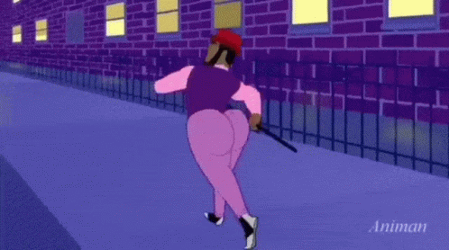

Ao andar pelas ruas da Goya, de longe você vai ouvir um som peculiar que vai se aproximando gradualmente. Conforme o som se aproxima, você avista um grupo de homens em fila seguindo um homem bem vestido com um terno roxo, chapéu vermelho e uma bengala. Este homem tem um traseiro deveras avantajado, mas de maneira alguma você deve se deixar levar pela curiosidade e segui-los.
Se você se deixar levar pela curiosidade, algo horrível irá te acontecer... É tão horrível que não pode ser citado por motivos de segurança.